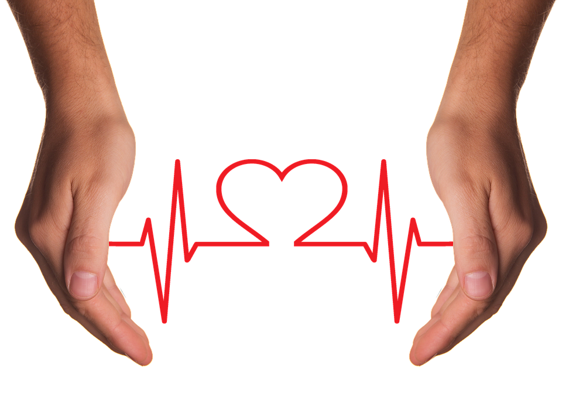

Benefits of sports
- Home
- Types of sports
- History of sports
- Negative aspects of sports
- Balance between physical and mental activities
- Cheating in sports
Benefits of sports
- Better immunity
- Longer life
- Reduced body fat
- You will become mentally and physically stronger
- Sport boosts your self esteem
- Getting academicly better
More information
Many athletes do better academically
Playing a sport requires a lot of time and energy. Some people may think this would distract student-athletes from schoolwork. However, the opposite is true. Sports require memorization, repetition and learning — skillsets that are directly relevant to class work. Also, the determination and goal-setting skills a sport requires can be transferred to the classroom.
Sports boost self-esteem
Watching your hard work pay off and achieving your goals develops self-confidence. Achieving a sport or fitness goal encourages you to achieve other goals you set. This is a rewarding and exciting learning process.
Physical health benefits of sports
Clearly, sports can help you reach your fitness goals and maintain a healthy weight. However, they also encourage healthy decision-making such as not smoking and not drinking. Sports also have hidden health benefits such as lowering the chance of osteoporosis or breast cancer later in life.
Positivity & Better Mood
Exercising helps you to be in a better mood. It is not new information that after a regular workout people feel happier, forget their anxiety, depression, anger, and stress.
Energy
You will become stronger, your body will have a more durable design, and you’ll have more energy! Many of us are aware of the people who fail to achieve their goals, people who lack the energy for active life (and maybe you are one of them?). Even a little intense and regular sport will give you the strength needed to carry plenty of shopping bags or it will just make it easier to climb stairs.
Getting famous and rich

If you are good enough in one type of sport or you are a good athlete in general, you should try going pro. It sure isn't easy, you have to have the right connections to get into sport clubs or organizations.
But if you make it you are good to go to have a wonderful life doing what you love and getting a lot of money and or even fame. There are many people who made it f.e.: Michael Jordan, Lionel Messi, Neymar Jr., Lebron James, Christiano Ronaldo, etc...
How this also could be a negative aspect is explained in our next page: Negative aspects of sports